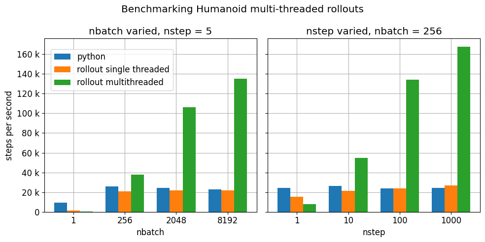

Python#
MuJoCo comes with native Python bindings that are developed in C++ using pybind11. The Python API is consistent with the underlying C API. This leads to some non-Pythonic code structure (e.g. order of function arguments), but it has the benefit that the API documentation is applicable to both languages.
The Python bindings are distributed as the mujoco package on PyPI. These are
low-level bindings that are meant to give as close to a direct access to the MuJoCo library as possible. However, in
order to provide an API and semantics that developers would expect in a typical Python library, the bindings
deliberately diverge from the raw MuJoCo API in a number of places, which are documented throughout this page.
Google DeepMind’s dm_control reinforcement learning library depends
on the mujoco package and continues to be supported by Google DeepMind. For code that depends on dm_control versions
prior to 1.0.0, consult the
migration guide.
For mujoco-py users, we include migration notes below.
Tutorial notebook#
A MuJoCo tutorial using the Python bindings is available here: 
Installation#
The recommended way to install this package is via PyPI:
pip install mujoco
A copy of the MuJoCo library is provided as part of the package and does not need to be downloaded or installed separately.
Interactive viewer#
An interactive GUI viewer is provided as part of the Python package in the mujoco.viewer module. It is based on the
same codebase as the simulate application that ships with the MuJoCo binary releases. Three distinct
use cases are supported: managed viewer, standalone app, and passive
viewer.
Managed viewer#
The viewer.launch function launches the interactive viewer and blocks user code which is useful to support precise
timing of the physics loop. This mode should be used if user code is implemented as engine
plugins or physics callbacks, and is called by MuJoCo during mj_step.
viewer.launch()launches an empty visualization session, where a model can be loaded by drag-and-drop.viewer.launch(model)launches a visualization session for the givenmjModelwhere the visualizer internally creates its own instance ofmjDataviewer.launch(model, data)is the same as above, except that the visualizer operates directly on the givenmjDatainstance – upon exit thedataobject will have been modified.
Standalone app#
The mujoco.viewer Python package uses the if __name__ == '__main__' mechanism to allow the managed
viewer to be called directly from the command line as a standalone app:
python -m mujoco.viewerlaunches an empty visualization session, where a model can be loaded by drag-and-drop.python -m mujoco.viewer --mjcf=/path/to/some/mjcf.xmllaunches a visualization session for the specified model file.
Passive viewer#
The viewer.launch_passive function launches the interactive viewer in a way which does not block, allowing user
code to continue execution. In this mode, the user’s script is responsible for timing and advancing the physics state,
and mouse-drag perturbations will not work unless the user explicitly synchronizes incoming events.
Warning
On MacOS, launch_passive requires that the user script is executed via a special mjpython launcher, this is
needed to circumvent a platform limitation which requires the main thread to be one that does the rendering. The
mjpython command is installed as part of the mujoco package, and can be used as a drop-in replacement for the
usual python command and supports an identical set of command line flags and arguments. For example, a script can
be executed via mjpython my_script.py, and an IPython shell can be launched via mjpython -m IPython.
The launch_passive function returns a handle which can be used to interact with the viewer. It has the following
attributes:
cam,opt, andpertproperties: correspond to mjvCamera, mjvOption, and mjvPerturb structs, respectively.lock(): provides a mutex lock for the viewer as a context manager. Since the viewer operates its own thread, user code must ensure that it is holding the viewer lock before modifying any physics or visualization state. These include themjModelandmjDatainstance passed tolaunch_passive, and also thecam,opt, andpertproperties of the viewer handle.sync(state_only=False): synchronizes between the user’smjModel,mjDataand the GUI. In order to allow user scripts to make arbitrary modifications tomjModelandmjDatawithout needing to hold the viewer lock, the passive viewer does not access or modify these structs outside ofsynccalls. If thestate_onlyargument isTrue, instead of syncing everything, only themjDatafields corresponding to mjSTATE_INTEGRATION are synced, followed by a call to mj_forward. The latter option is much faster, but would not pick up arbitrary changes as in the default case. Changes made via the GUI are picked up in either case but changing e.g.,mjModel.geom_rgbavia code will be picked up whenstate_only=Falsebut not whenstate_only=True.User scripts must call
syncin order for the viewer to reflect physics state changes. Thesyncfunction also transfers user inputs from the GUI back intomjOption(insidemjModel) andmjData, including enable/disable flags, control inputs, and mouse perturbations.update_hfield(hfieldid): updates the height field data at the specifiedhfieldidfor subsequent renderings.update_mesh(meshid): updates the mesh data at the specifiedmeshidfor subsequent renderings.update_texture(texid): updates the texture data at the specifiedtexidfor subsequent renderings.close(): programmatically closes the viewer window. This method can be safely called without locking.is_running(): returnsTrueif the viewer window is running andFalseif it is closed. This method can be safely called without locking.user_scn: an mjvScene object that allows users to add change rendering flags and add custom visualization geoms to the rendered scene. This is separate from themjvScenethat the viewer uses internally to render the final scene, and is entirely under the user’s control. User scripts can call e.g. mjv_initGeom or mjv_connector to add visualization geoms touser_scn, and upon the next call tosync(), the viewer will incorporate these geoms to future rendered images. Similarly, user scripts can make changes touser_scn.flagswhich would be picked up at the next call tosync(). Thesync()call also copies changes to rendering flags made via the GUI back intouser_scnto preserve consistency. For example:with mujoco.viewer.launch_passive(m, d, key_callback=key_callback) as viewer: # Enable wireframe rendering of the entire scene. viewer.user_scn.flags[mujoco.mjtRndFlag.mjRND_WIREFRAME] = 1 viewer.sync() while viewer.is_running(): ... # Step the physics. mujoco.mj_step(m, d) # Add a 3x3x3 grid of variously colored spheres to the middle of the scene. viewer.user_scn.ngeom = 0 i = 0 for x, y, z in itertools.product(*((range(-1, 2),) * 3)): mujoco.mjv_initGeom( viewer.user_scn.geoms[i], type=mujoco.mjtGeom.mjGEOM_SPHERE, size=[0.02, 0, 0], pos=0.1*np.array([x, y, z]), mat=np.eye(3).flatten(), rgba=0.5*np.array([x + 1, y + 1, z + 1, 2]) ) i += 1 viewer.user_scn.ngeom = i viewer.sync() ...
The viewer handle can also be used as a context manager which calls close() automatically upon exit. A minimal
example of a user script that uses launch_passive might look like the following. (Note that example is a simple
illustrative example that does not necessarily keep the physics ticking at the correct wallclock rate.)
import time
import mujoco
import mujoco.viewer
m = mujoco.MjModel.from_xml_path('/path/to/mjcf.xml')
d = mujoco.MjData(m)
with mujoco.viewer.launch_passive(m, d) as viewer:
# Close the viewer automatically after 30 wall-seconds.
start = time.time()
while viewer.is_running() and time.time() - start < 30:
step_start = time.time()
# mj_step can be replaced with code that also evaluates
# a policy and applies a control signal before stepping the physics.
mujoco.mj_step(m, d)
# Example modification of a viewer option: toggle contact points every two seconds.
with viewer.lock():
viewer.opt.flags[mujoco.mjtVisFlag.mjVIS_CONTACTPOINT] = int(d.time % 2)
# Pick up changes to the physics state, apply perturbations, update options from GUI.
viewer.sync()
# Rudimentary time keeping, will drift relative to wall clock.
time_until_next_step = m.opt.timestep - (time.time() - step_start)
if time_until_next_step > 0:
time.sleep(time_until_next_step)
Optionally, viewer.launch_passive accepts the following keyword arguments.
key_callback: A callable which gets called each time a keyboard event occurs in the viewer window. This allows user scripts to react to various key presses, e.g., pause or resume the run loop when the spacebar is pressed.paused = False def key_callback(keycode): if chr(keycode) == ' ': nonlocal paused paused = not paused ... with mujoco.viewer.launch_passive(m, d, key_callback=key_callback) as viewer: while viewer.is_running(): ... if not paused: mujoco.mj_step(m, d) viewer.sync() ...
show_left_uiandshow_right_ui: Boolean arguments indicating whether UI panels should be visible or hidden when the viewer is launched. Note that regardless of the values specified, the user can still toggle the visibility of these panels after launch by pressing Tab or Shift+Tab.
Basic usage#
Once installed, the package can be imported via import mujoco. Structs, functions, constants, and enums are
available directly from the top-level mujoco module.
Structs#
The bindings include Python classes that expose MuJoCo data structures. For maximum performance, these classes provide
access to the raw memory used by MuJoCo without copying or buffering. This means that some MuJoCo functions (e.g.,
mj_step) change the content of fields in place. The user is therefore advised to create copies where required.
For example, when logging the position of a body, one could write
positions.append(data.body('my_body').xpos.copy()). Without the .copy(), the list would contain identical
elements, all pointing to the most recent value. The same applies to NumPy slices. For example if a local
variable qpos_slice = data.qpos[3:8] is created and then mj_step is called, the values in qpos_slice
will have been changed.
In order to conform to PEP 8
naming guidelines, struct names begin with a capital letter, for example mjData becomes mujoco.MjData in Python.
All structs other than mjModel have constructors in Python. For structs that have an mj_defaultFoo-style
initialization function, the Python constructor calls the default initializer automatically, so for example
mujoco.MjOption() creates a new mjOption instance that is pre-initialized with mj_defaultOption.
Otherwise, the Python constructor zero-initializes the underlying C struct.
Structs with a mj_makeFoo-style initialization function have corresponding constructor overloads in Python,
for example mujoco.MjvScene(model, maxgeom=10) in Python creates a new mjvScene instance that is
initialized with mjv_makeScene(model, [the new mjvScene instance], 10) in C. When this form of initialization is
used, the corresponding deallocation function mj_freeFoo/mj_deleteFoo is automatically called when the Python
object is deleted. The user does not need to manually free resources.
The mujoco.MjModel class does not have a Python constructor. Instead, we provide three static factory functions
that create a new mjModel instance: mujoco.MjModel.from_xml_string, mujoco.MjModel.from_xml_path, and
mujoco.MjModel.from_binary_path. The first function accepts a model XML as a string, while the latter two
functions accept the path to either an XML or MJB model file. All three functions optionally accept a Python
dictionary which is converted into a MuJoCo Virtual file system for use during model compilation.
Functions#
MuJoCo functions are exposed as Python functions of the same name. Unlike with structs, we do not attempt to make the function names PEP 8-compliant, as MuJoCo uses both underscores and CamelCases. In most cases, function arguments appear exactly as they do in C, and keyword arguments are supported with the same names as declared in mujoco.h. Python bindings to C functions that accept array input arguments expect NumPy arrays or iterable objects that are convertible to NumPy arrays (e.g. lists). Output arguments (i.e. array arguments that MuJoCo expect to write values back to the caller) must always be writeable NumPy arrays.
In the C API, functions that take dynamically-sized arrays as inputs expect a pointer argument to the array along with
an integer argument that specifies the array’s size. In Python, the size arguments are omitted since we can
automatically (and indeed, more safely) deduce it from the NumPy array. When calling these functions, pass all
arguments other than array sizes in the same order as they appear in mujoco.h, or use keyword
arguments. For example, mj_jac should be called as mujoco.mj_jac(m, d, jacp, jacr, point, body) in Python.
The bindings releases the Python Global Interpreter Lock (GIL) before calling the underlying MuJoCo function. This allows for some thread-based parallelism, however users should bear in mind that the GIL is only released for the duration of the MuJoCo C function itself, and not during the execution of any other Python code.
Note
One place where the bindings do offer added functionality is the top-level mj_step function. Since it is
often called in a loop, we have added an additional nstep argument, indicating how many times the underlying
mj_step should be called. If not specified, nstep takes the default value of 1. The following two code
snippets perform the same computation, but the first one does so without acquiring the GIL in between subsequent
physics steps:
mj_step(model, data, nstep=20)
for _ in range(20):
mj_step(model, data)
Enums and constants#
MuJoCo enums are available as mujoco.mjtEnumType.ENUM_VALUE, for example mujoco.mjtObj.mjOBJ_SITE. MuJoCo
constants are available with the same name directly under the mujoco module, for example mujoco.mjVISSTRING.
Minimal example#
import mujoco
XML=r"""
<mujoco>
<asset>
<mesh file="gizmo.stl"/>
</asset>
<worldbody>
<body>
<freejoint/>
<geom type="mesh" name="gizmo" mesh="gizmo"/>
</body>
</worldbody>
</mujoco>
"""
ASSETS=dict()
with open('/path/to/gizmo.stl', 'rb') as f:
ASSETS['gizmo.stl'] = f.read()
model = mujoco.MjModel.from_xml_string(XML, ASSETS)
data = mujoco.MjData(model)
while data.time < 1:
mujoco.mj_step(model, data)
print(data.geom_xpos)
Named access#
Most well-designed MuJoCo models assign names to objects (joints, geoms, bodies, etc.) of interest. When the model is
compiled down to an mjModel instance, these names become associated with numeric IDs that are used to index into the
various array members. For convenience and code readability, the Python bindings provide “named access” API on
MjModel and MjData. Each name_fooadr field in the mjModel struct defines a name category foo.
For each name category foo, mujoco.MjModel and mujoco.MjData objects provide a method foo that takes
a single string argument, and returns an accessor object for all arrays corresponding to the entity foo of the
given name. The accessor object contains attributes whose names correspond to the fields of either mujoco.MjModel or
mujoco.MjData but with the part before the underscore removed. In addition, accessor objects also provide id and
name properties, which can be used as replacements for mj_name2id and mj_id2name respectively. For example:
m.geom('gizmo')returns an accessor for arrays in theMjModelobjectmassociated with the geom named “gizmo”.m.geom('gizmo').rgbais a NumPy array view of length 4 that specifies the RGBA color for the geom. Specifically, it corresponds to the portion ofm.geom_rgba[4*i:4*i+4]wherei = mujoco.mj_name2id(m, mujoco.mjtObj.mjOBJ_GEOM, 'gizmo').m.geom('gizmo').idis the same number as returned bymujoco.mj_name2id(m, mujoco.mjtObj.mjOBJ_GEOM, 'gizmo').m.geom(i).nameis'gizmo', wherei = mujoco.mj_name2id(m, mujoco.mjtObj.mjOBJ_GEOM, 'gizmo').
Additionally, the Python API define a number of aliases for some name categories corresponding to the XML element name
in the MJCF schema that defines an entity of that category. For example, m.joint('foo') is the same as
m.jnt('foo'). A complete list of these aliases are provided below.
The accessor for joints is somewhat different that of the other categories. Some mjModel and mjData fields
(those of size size nq or nv) are associated with degrees of freedom (DoFs) rather than joints. This is because
different types of joints have different numbers of DoFs. We nevertheless associate these fields to their corresponding
joints, for example through d.joint('foo').qpos and d.joint('foo').qvel, however the size of these arrays would
differ between accessors depending on the joint’s type.
Named access is guaranteed to be O(1) in the number of entities in the model. In other words, the time it takes to access an entity by name does not grow with the number of names or entities in the model.
For completeness, we provide here a complete list of all name categories in MuJoCo, along with their corresponding aliases defined in the Python API.
bodyjntorjointgeomsitecamorcameralightmeshskinhfieldtexortexturematormaterialpairexcludeeqorequalitytendonortenactuatorsensornumerictexttuplekeyorkeyframe
Rendering#
MuJoCo itself expects users to set up a working OpenGL context before calling any of its mjr_ rendering routine.
The Python bindings provide a basic class mujoco.GLContext that helps users set up such a context for offscreen
rendering. To create a context, call ctx = mujoco.GLContext(max_width, max_height). Once the context is created,
it must be made current before MuJoCo rendering functions can be called, which you can do so via ctx.make_current().
Note that a context can only be made current on one thread at any given time, and all subsequent rendering calls must be
made on the same thread.
The context is freed automatically when the ctx object is deleted, but in some multi-threaded scenario it may be
necessary to explicitly free the underlying OpenGL context. To do so, call ctx.free(), after which point it is the
user’s responsibility to ensure that no further rendering calls are made on the context.
Once the context is created, users can follow MuJoCo’s standard rendering, for example as documented in the Visualization section.
Error handling#
MuJoCo reports irrecoverable errors via the mju_error mechanism, which immediately terminates the entire process. Users are permitted to install a custom error handler via the mju_user_error callback, but it too is expected to terminate the process, otherwise the behavior of MuJoCo after the callback returns is undefined. In actuality, it is sufficient to ensure that error callbacks do not return to MuJoCo, but it is permitted to use longjmp to skip MuJoCo’s call stack back to the external callsite.
The Python bindings utilizes longjmp to allow it to convert irrecoverable MuJoCo errors into Python exceptions of type
mujoco.FatalError that can be caught and processed in the usual Pythonic way. Furthermore, it installs its error
callback in a thread-local manner using a currently private API, thus allowing for concurrent calls into MuJoCo from
multiple threads.
Callbacks#
MuJoCo allows users to install custom callback functions to modify certain parts of its computation pipeline.
For example, mjcb_sensor can be used to implement custom sensors, and mjcb_control can be used to
implement custom actuators. Callbacks are exposed through the function pointers prefixed mjcb_ in
mujoco.h.
For each callback mjcb_foo, users can set it to a Python callable via mujoco.set_mjcb_foo(some_callable). To
reset it, call mujoco.set_mjcb_foo(None). To retrieve the currently installed callback, call
mujoco.get_mjcb_foo(). (The getter should not be used if the callback is not installed via the Python bindings.)
The bindings automatically acquire the GIL each time the callback is entered, and release it before reentering MuJoCo.
This is likely to incur a severe performance impact as callbacks are triggered several times throughout MuJoCo’s
computation pipeline and is unlikely to be suitable for “production” use case. However, it is expected that this feature
will be useful for prototyping complex models.
Alternatively, if a callback is implemented in a native dynamic library, users can use
ctypes to obtain a Python handle to the C function pointer and pass
it to mujoco.set_mjcb_foo. The bindings will then retrieve the underlying function pointer and assign it directly to
the raw callback pointer, and the GIL will not be acquired each time the callback is entered.
Model editing#
The C API for model editing is documented in the Programming chapter. This functionality is mirrored in the Python API, with the addition of several convenience methods. Below is a minimal usage example, more examples can be found in the Model Editing colab notebook.
import mujoco
spec = mujoco.MjSpec()
spec.modelname = "my model"
body = spec.worldbody.add_body(
pos=[1, 2, 3],
quat=[0, 1, 0, 0],
)
geom = body.add_geom(
name='my_geom',
type=mujoco.mjtGeom.mjGEOM_SPHERE,
size=[1, 0, 0],
rgba=[1, 0, 0, 1],
)
...
model = spec.compile()
Construction#
The MjSpec object wraps the mjSpec struct and can be constructed in three ways:
Create an empty spec:
spec = mujoco.MjSpec()Load the spec from XML string:
spec = mujoco.MjSpec.from_string(xml_string)Load the spec from XML file:
spec = mujoco.MjSpec.from_file(file_path)
Note the from_string() and from_file() methods can only be called at construction time.
Assets#
MuJoCo optionally uses a Virtual File System (VFS) to load assets (like meshes and textures) from memory. Some decoders may also choose to leverage the VFS as a way to load assets on demand, such as when addressing files in an archive format. This requires the same VFS to be used when parsing and compiling a spec (and all attached specs) into a model.
The Python bindings provide the mujoco.MjVfs as a wrapper around the mjVFS C struct.
MjVfs supports the context manager protocol, which ensures that resources are properly freed when leaving the block:
with mujoco.MjVfs() as vfs:
vfs["model.xml"] = b"<mujoco/>"
spec = mujoco.MjSpec.from_string("model.xml", vfs=vfs)
spec.compile(vfs=vfs)
You can also create an instance directly and call close() when done:
vfs = mujoco.MjVfs()
vfs["model.xml"] = some_xml_string.encode("utf-8")
spec = mujoco.MjSpec.from_file("model.xml", vfs=vfs)
spec.compile(vfs=vfs)
vfs.close()
The MjVfs object supports dictionary-like operations to manage buffers:
vfs["name"] = data: Adds a buffer to the VFS.datamust be of typebytes.del vfs["name"]: Deletes a file from the VFS."name" in vfs: Checks if a file exists in the VFS.
The static factory functions mujoco.MjModel.from_xml_string, mujoco.MjModel.from_xml_path,
mujoco.MjSpec.from_string and mujoco.MjSpec.from_file accept an optional vfs argument. Additionally, the
spec.compile() function also accepts an optional vfs argument.
Warning
The previous way of passing assets via a dictionary mapping asset names to bytes is deprecated and will be
removed in the next release. You cannot specify both the assets dictionary and the vfs argument at the same
time. MjVfs should be used as a drop-in replacement.
For reference, the deprecated assets dictionary approach looked like this:
assets = {'image.png': b'image_data'}
spec = mujoco.MjSpec.from_string(xml_referencing_image_png, assets=assets)
model = spec.compile()
# Or
spec = mujoco.MjSpec.from_string(xml_referencing_image_png)
spec.assets = {'image.png': b'image_data'}
model = spec.compile()
Save to XML#
Compiled MjSpec objects can be saved to XML string with the to_xml() method:
print(spec.to_xml())
<mujoco model="my model">
<compiler angle="radian"/>
<worldbody>
<body pos="1 2 3" quat="0 1 0 0">
<geom name="my_geom" size="1" rgba="1 0 0 1"/>
</body>
</worldbody>
</mujoco>
Alternatively, the spec can be saved directly to a file using encode():
spec.encode('model.xml', model)
Attachment#
It is possible to combine multiple specs by using attachments. The following options are possible:
Attach a body from the child spec to a frame in the parent spec:
body.attach_body(body, prefix, suffix), returns the reference to the attached body, which should be identical to the body used as input.Attach a frame from the child spec to a body in the parent spec:
body.attach_frame(frame, prefix, suffix), returns the reference to the attached frame, which should be identical to the frame used as input.Attach a child spec to a site in the parent spec:
parent_spec.attach(child_spec, site=site_name_or_obj), returns the reference to a frame, which is the attached worldbody transformed into a frame. The site must belong to the child spec. Prefix and suffix can also be specified as keyword arguments.Attach a child spec to a frame in the parent spec:
parent_spec.attach(child_spec, frame=frame_name_or_obj), returns the reference to a frame, which is the attached worldbody transformed into a frame. The frame must belong to the child spec. Prefix and suffix can also be specified as keyword arguments.
The default behavior of attaching is to not copy, so all the child references (except for the worldbody) are still valid
in the parent and therefore modifying the child will modify the parent. This is not true for the attach
attach and replicate meta-elements in MJCF, which create deep copies while
attaching. However, it is possible to override the default behavior by setting spec.copy_during_attach to
True. In this case, the child spec is copied and the references to the child will not point to the parent.
import mujoco
# Create the parent spec.
parent = mujoco.MjSpec()
body = parent.worldbody.add_body()
frame = parent.worldbody.add_frame()
site = parent.worldbody.add_site()
# Create the child spec.
child = mujoco.MjSpec()
child_body = child.worldbody.add_body()
child_frame = child.worldbody.add_frame()
# Attach the child to the parent in different ways.
body_in_frame = frame.attach_body(child_body, 'child-', '')
frame_in_body = body.attach_frame(child_frame, 'child-', '')
worldframe_in_site = parent.attach(child, site=site, prefix='child-')
worldframe_in_frame = parent.attach(child, frame=frame, prefix='child-')
Convenience methods#
The Python bindings provide a number of convenience methods and attributes not directly available in the C API in order to make model editing easier:
Named access#
The MjSpec object has methods like .body(), .joint(), .site(), ... for named access of elements.
spec.geom('my_geom') will return the mjsGeom called “my_geom”, or None if it does not exist.
Element lists#
Lists of all elements in a spec can be accessed using named properties, using the plural form. For example,
spec.meshes returns a list of all meshes in the spec. The following properties are implemented: sites,
geoms, joints, lights, cameras, bodies, frames, materials, meshes, pairs,
equalities, tendons, actuators, skins, textures, texts, tuples, flexes, hfields,
keys, numerics, excludes, sensors, plugins.
Element removal#
The method delete() removes the corresponding element from the spec, e.g. spec.delete(spec.geom('my_geom')) will
remove the geom named “my_geom” and all of the elements that reference it. For elements that can have children (bodies
and defaults), delete also removes all of their children. When deleting body subtrees, all elements which reference
elements in the subtree, will also be removed.
Tree traversal#
Traversal of the kinematic tree is aided by the following methods which return tree-related lists of elements:
- Direct children:
Like the spec-level element lists described above, bodies have properties which return lists of all direct children. For example,
body.geomsreturns a list of all geoms that are direct children of the body. This works for all in tree elements namelybodies,joints,geoms,sites,cameras,lightsandframes.- Recursive search:
body.find_all()returns a list of all elements of the given type which are in the subtree of the given body. Element types can be specified with the mjtObj enum, or with the corresponding string. For example eitherbody.find_all(mujoco.mjtObj.mjOBJ_SITE)orbody.find_all('site')will return a list of all sites under the body.- Parent:
The parent body of a given element – including bodies and frames – can be accessed via the
parentproperty. For example, the parent of a site can be accessed viasite.parent.
Serialization#
The MjSpec object can be serialized with all of its assets using the function spec.to_zip(file), where file
can be either a path to a file or a file object. In order to load the spec from a zip file, use spec =
MjSpec.from_zip(file), where file is a path to a zip file or a zip file object.
Mesh creation#
The mjsMesh object includes convenience methods for model creation with named attributes, corresponding to the mesh/builtin semantics. See specs_test.py.
mesh = spec.add_mesh(name='prism')
mesh.make_cone(nedge=5, radius=1)
Texture editing#
The mjsTexture buffer option stores the texture bytes in the data attribute. This attribute can be read and
modified, for example:
texture = spec.add_texture(name='texture', height=1, width=3, nchannel=3)
texture.data = bytes([255, 0, 0, 0, 255, 0, 0, 0, 255]) # Assign red, green and blue pixels.
texture.data[1] = 255 # Change the first pixel to yellow.
Relationship to PyMJCF and bind#
dm_control’s PyMJCF module provides similar functionality to the native model editing API described here, but is roughly two orders of magnitude slower due to its reliance on Python manipulation of strings.
For users familiar with PyMJCF, the MjSpec object is conceptually similar to dm_control’s
mjcf_model. A more detailed migration guide could be added here in the future; in the meantime, note that the
Model Editing
colab notebook
includes a reimplementation of the PyMJCF example in the dm_control
tutorial notebook.
PyMJCF provides a notion of “binding”, giving access to mjModel and mjData values via a helper class.
In the native API, the helper class is not needed, so it is possible to directly bind an mjs object to
mjModel and mjData. For example, say we have multiple geoms containing the string “torso” in their name.
We want to get their Cartesian positions in the XY plane from mjData. This can be done as follows:
torsos = [data.bind(geom) for geom in spec.geoms if 'torso' in geom.name]
pos_x = [torso.xpos[0] for torso in torsos]
pos_y = [torso.xpos[1] for torso in torsos]
Using the bind method requires the mjModel and mjData to be compiled from the :ref:`mjSpec. If
objects are added or removed from the mjSpec since the last compilation, an error is raised.
Notes#
mj_recompile works differently than in the C API. In the C API, it modifies the model and the data in place, while in the Python API it returns new mjModel and mjData objects. This is to avoid dangling references.
Building from source#
Note
Building from source is only necessary if you are modifying the Python bindings (or are trying to run on exceptionally old Linux systems). If that’s not the case, then we recommend installing the prebuilt binaries from PyPI.
Make sure you have CMake and a C++17 compiler installed.
Clone the entire
mujocorepository from GitHub.git clone https://github.com/google-deepmind/mujoco.git
Install MuJoCo. Either download the latest binary release from GitHub (On macOS, the download corresponds to a DMG file which you can mount by double-clicking or running
hdiutil attach <dmg_file>), or build and install it from source as per the instructions in Building from source.cdinto the python directory of the cloned MuJoCo codebase:cd mujoco/python
Create a virtual environment:
python3 -m venv /tmp/mujoco source /tmp/mujoco/bin/activate
Generate a source distribution tarball with the
make_sdist.shscript.bash make_sdist.shThe
make_sdist.shscript generates additional C++ header files that are needed to build the bindings, and also pulls in required files from elsewhere in the repository outside thepythondirectory into the sdist. Upon completion, the script will create adistdirectory with amujoco-x.y.z.tar.gzfile (wherex.y.zis the version number).Use the generated source distribution to build and install the bindings. You’ll need to specify the path to the MuJoCo library you downloaded or built and installed earlier in the
MUJOCO_PATHenvironment variable, and the path to the MuJoCo plugin directory in theMUJOCO_PLUGIN_PATHenvironment variable. You can point theMUJOCO_PLUGIN_PATHenvironment variable to thepluginfolder of the MuJoCo codebase you cloned.Note
For macOS, the files need to be extracted from the DMG. Once you mounted it as in step 2, the
mujoco.frameworkdirectory can be found in/Volumes/MuJoCo, and the plugins directory can be found in/Volumes/MuJoCo/MuJoCo.app/Contents/MacOS/mujoco_plugin. Those two directories can be copied out somewhere convenient, or you can useMUJOCO_PATH=/Volumes/MuJoCo MUJOCO_PLUGIN_PATH=/Volumes/MuJoCo/MuJoCo.app/Contents/MacOS/mujoco_plugin.cd dist MUJOCO_PATH=/PATH/TO/MUJOCO \ MUJOCO_PLUGIN_PATH=/PATH/TO/MUJOCO/PLUGIN \ pip install mujoco-x.y.z.tar.gz
The Python bindings should now be installed! To check that they’ve been
successfully installed, cd outside of the mujoco directory and run
python -c "import mujoco".
Tip
As a reference, a working build configuration can be found in MuJoCo’s continuous integration setup on GitHub.
Modules#
The mujoco package contains two sub-modules: mujoco.rollout and mujoco.minimize
rollout#
mujoco.rollout and mujoco.rollout.Rollout show how to add additional C/C++ functionality, exposed as a Python
module via pybind11. It is implemented in rollout.cc and wrapped in rollout.py. The module addresses a common
use-case where tight loops implemented outside of Python are beneficial: rolling out a trajectory (i.e., calling
mj_step in a loop), given an initial state and sequence of controls, and returning subsequent states and sensor
values. The rollouts are run in parallel with an internally managed thread pool if multiple MjData instances (one per
thread) are passed as an argument. This notebook shows how to use rollout  , along with some
benchmarks e.g., the figure below.
, along with some
benchmarks e.g., the figure below.
{kind=link}

The basic usage form is
state, sensordata = rollout.rollout(model, data, initial_state, control)
modelis either a single instance of MjModel or a sequence of homogeneous MjModels of lengthnbatch. Homogeneous models have the same integer sizes, but floating point values can differ.datais either a single instance of MjData or a sequence of compatible MjDatas of lengthnthread.initial_stateis annbatch x nstatearray, withnbatchinitial states of sizenstate, wherenstate = mj_stateSize(model, mjtState.mjSTATE_FULLPHYSICS)is the size of the full physics state.controlis anbatch x nstep x ncontrolarray of controls. Controls are by default themjModel.nustandard actuators, but any combination of user input arrays can be specified by passing an optionalcontrol_specbitflag.
If a rollout diverges, the current state and sensor values are used to fill the remainder of the trajectory. Therefore, non-increasing time values can be used to detect diverged rollouts.
The rollout function is designed to be computationally stateless, so all inputs of the stepping pipeline are set and
any values already present in the given MjData instance will have no effect on the output.
By default rollout.rollout creates a new thread pool every call if len(data) > 1. To reuse the thread pool
over multiple calls use the persistent_pool argument. rollout.rollout is not thread safe when using
a persistent pool. The basic usage form is
state, sensordata = rollout.rollout(model, data, initial_state, persistent_pool=True)
The pool is shutdown on interpreter shutdown or by a call to rollout.shutdown_persistent_pool.
To use multiple thread pools from multiple threads, use Rollout objects. The basic usage form is
# Pool shutdown upon exiting block.
with rollout.Rollout(nthread=nthread) as rollout_:
rollout_.rollout(model, data, initial_state)
or
# Pool shutdown on object deletion or call to rollout_.close().
# To ensure clean shutdown of threads, call close() before interpreter exit.
rollout_ = rollout.Rollout(nthread=nthread)
rollout_.rollout(model, data, initial_state)
rollout_.close()
Since the Global Interpreter Lock is released, this function can also be threaded using Python threads. However, this
is less efficient than using native threads. See the test_threading function in
rollout_test.py for an example
of threaded operation (and for more general usage examples).
minimize#
This module contains optimization-related utilities.
The minimize.least_squares() function implements a nonlinear Least Squares optimizer solving sequential
Quadratic Programs with mju_boxQP. It is documented in the associated notebook: 
USD exporter#
The USD exporter module allows users to save scenes and trajectories in the USD format for rendering in external renderers such as NVIDIA Omniverse or Blender. These renderers provide higher quality rendering capabilities not provided by the default renderer. Additionally, exporting to USD allows users to include different types of texture maps to make objects in the scene look more realistic.
Installation#
The recommended way to install the necessary requirements for the USD exporter is via PyPI:
pip install mujoco[usd]
This installs the optional dependencies usd-core and pillow required by the USD exporter.
If you are building from source, please ensure to build the Python bindings. Then, using pip, install the required
usd-core and pillow packages.
USDExporter#
The USDExporter class in the mujoco.usd.exporter module allows saving full trajectories in addition to defining
custom cameras and lights. The constructor arguments of a USDExporter instance are:
model: An MjModel instance. The USD exporter reads relevant information from the model including details about cameras, lights, textures, and object geometries.max_geom: Maximum number of geoms in a scene, required when instantiating the internal mjvScene.output_directory: Name of the directory under which the exported USD file and all relevant assets are stored. When saving a scene/trajectory as a USD file, the exporter creates the following directory structure.output_directory_root/ └-output_directory/ ├-assets/ | ├-texture_0.png | ├-texture_1.png | └-... └─frames/ └-frame_301.usdUsing this file structure allows users to easily archive the
output_directory. All paths to assets in the USD file are relative, facilitating the use of the USD archive on another machine.output_directory_root: Root directory to add USD trajectory to.light_intensity: Intensity of all lights. Note that the units of intensity may be defined differently in different renderers, so this value may need to be adjusted on a render-specific basis.camera_names: List of cameras to be stored in the USD file. At each time step, for each camera defined, we calculate its position and orientation and add that value for that given frame in the USD. USD allows us to store multiple cameras.verbose: Whether or not to print log messages from the exporter.
If you wish to export a model loaded directly from an MJCF, we provide a demo script that shows how to do so. This demo file also serves as an example of the USD export functionality.
Basic usage#
Once the optional dependencies are installed, the USD exporter can be imported via from mujoco.usd import exporter.
Below, we demonstrate a simple example of using the USDExporter. During initialization, the USDExporter creates
an empty USD stage, as well as the assets and frames directories if they do not already exist. Additionally, it
generates .png files for each texture defined in the model. Every time update_scene is called, the exporter records
the position and orientation of all geoms, lights, and cameras in the scene.
The USDExporter keeps track of frames internally by maintaining a frame counter. Each time update_scene is
called, the counter is incremented, and the poses of all geoms, cameras, and lights are saved for the corresponding
frame. It’s important to note that you can step through the simulation multiple times before calling update_scene.
The final USD file will only store the poses of the geoms, lights, and cameras as they were at the last update_scene
call.
import mujoco
from mujoco.usd import exporter
m = mujoco.MjModel.from_xml_path('/path/to/mjcf.xml')
d = mujoco.MjData(m)
# Create the USDExporter
exp = exporter.USDExporter(model=m)
duration = 5
framerate = 60
while d.time < duration:
# Step the physics
mujoco.mj_step(m, d)
if exp.frame_count < d.time * framerate:
# Update the USD with a new frame
exp.update_scene(data=d)
# Export the USD file
exp.save_scene(filetype="usd")
USD Export API#
update_scene(self, data, scene_option): updates the scene with the latest simulation data passed in by the user. This function updates the geom, cameras, and lights in the scene.add_light(self, pos, intensity, radius, color, obj_name, light_type): adds a light to the USD scene with the given properties post hoc.add_camera(self, pos, rotation_xyz, obj_name): adds a camera to the USD scene with the given properties post hoc.save_scene(self, filetype): exports the USD scene using one of the USD filetype extensions.usd,.usda, or.usdc.
Missing features#
Below, we list remaining action items for the USD exporter. Please feel free to suggest additional requests by creating a new feature request in GitHub.
Add support for additional texture maps including metallic, occlusion, roughness, bump, etc.
Add support for online rendering with Isaac.
Add support for custom cameras.
Utilities#
The python/mujoco directory also contains utility scripts.
msh2obj.py#
The msh2obj.py script converts the legacy .msh format for surface meshes (different from the possibly-volumetric gmsh format also using .msh), to OBJ files. The legacy format is deprecated and will be removed in a future release. Please convert all legacy files to OBJ.
mujoco-py migration#
In mujoco-py, the main entry point is the MjSim
class. Users construct a stateful MjSim instance from an MJCF model (similar to dm_control.Physics), and this
instance holds references to an mjModel instance and its associated mjData. In contrast, the MuJoCo Python
bindings (mujoco) take a more low-level approach, as explained above: following the design principle of the C
library, the mujoco module itself is stateless, and merely wraps the underlying native structs and functions.
While a complete survey of mujoco-py is beyond the scope of this document, we offer below implementation notes for a non-exhaustive list of specific mujoco-py features:
mujoco_py.load_model_from_xml(bstring)This factory function constructs a stateful
MjSiminstance. When usingmujoco, the user should call the factory functionmujoco.MjModel.from_xml_*as described above. The user is then responsible for holding the resultingMjModelstruct instance and explicitly generating the correspondingMjDataby callingmujoco.MjData(model).sim.reset(),sim.forward(),sim.step()Here as above,
mujocousers needs to call the underlying library functions, passing instances ofMjModelandMjData: mujoco.mj_resetData(model, data), mujoco.mj_forward(model, data), and mujoco.mj_step(model, data).sim.get_state(),sim.set_state(state),sim.get_flattened_state(),sim.set_state_from_flattened(state)The MuJoCo library’s computation is deterministic given a specific input, as explained in the Programming section. mujoco-py implements methods for getting and setting some of the relevant fields (and similarly
dm_control.Physicsoffers methods that correspond to the flattened case). This functionality is described in the State and Control section.sim.model.get_joint_qvel_addr(joint_name)This is a convenience method in mujoco-py that returns a list of contiguous indices corresponding to this joint. The list starts from
model.jnt_qposadr[joint_index], and its length depends on the joint type.mujocodoesn’t offer this functionality, but this list can be easily constructed usingmodel.jnt_qposadr[joint_index]andxrange.sim.model.*_name2id(name)mujoco-py creates dicts in
MjSimthat allow for efficient lookup of indices for objects of different types:site_name2id,body_name2idetc. These functions replace the function mujoco.mj_name2id(model, type_enum, name).mujocooffers a different approach for using entity names – named access, as well as access to the native mj_name2id.sim.save(fstream, format_name)This is the one context in which the MuJoCo library (and therefore also
mujoco) is stateful: it holds a copy in memory of the last XML that was compiled, which is used in mujoco.mj_saveLastXML(fname). Note that mujoco-py’s implementation has a convenient extra feature, whereby the pose (as determined bysim.data’s state) is transformed to a keyframe that’s added to the model before saving. This extra feature is not currently available inmujoco.